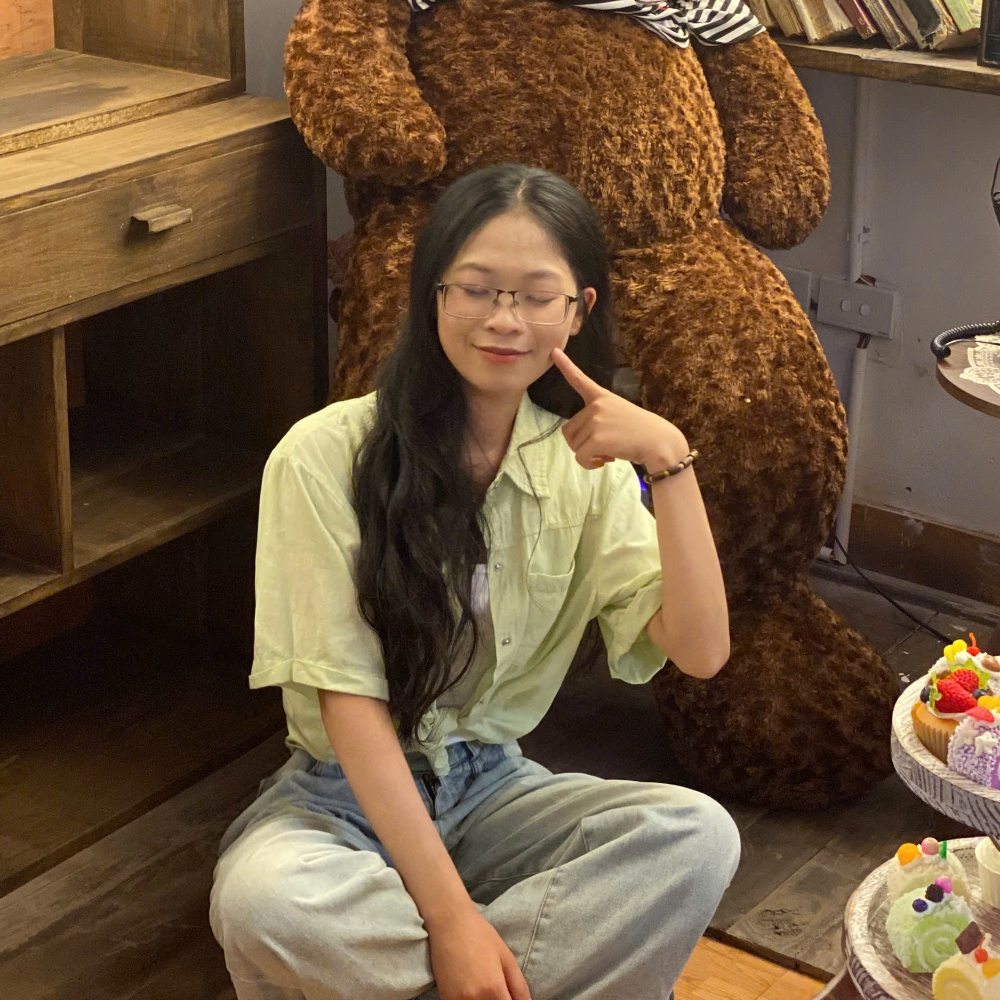

Nguyễn Thúy Nga

Sinh viên ngành NN&VH Trung Quốc, Trường Đại học Ngoại ngữ - Đại học Quốc gia Hà Nội. Trang Portfolio này không chỉ là nơi lưu trữ bài tập, mà là cuốn nhật ký ghi lại hành trình "chuyển mình" của mình, từ một người học ngôn ngữ thuần túy trở nên tự tin hơn khi bước vào thế giới công nghệ và trí tuệ nhân tạo.
Một chút về mình
Xin chào, mình là Nguyễn Thúy Nga, hiện đang là sinh viên ngành Ngôn ngữ và Văn hóa Trung Quốc tại Trường Đại học Ngoại ngữ - Đại học Quốc gia Hà Nội. Mình là một người luôn tràn đầy tò mò với thế giới xung quanh; mình chọn đọc sách để không ngừng tìm tòi tri thức mới, chọn xem phim để khám phá những góc nhìn cuộc sống và yêu thích những buổi mua sắm như một cách nạp lại năng lượng tích cực. Đối với mình, tiếng Trung là chiếc cầu nối đưa mình đến với chiều sâu văn hóa phương Đông, còn công nghệ chính là đôi cánh. Mình tin rằng việc làm chủ các công cụ số sẽ giúp thế hệ sinh viên ngôn ngữ như tụi mình tiến xa và nhạy bén hơn trong thời đại mới.
🎯 Mục tiêu học tập
Không chỉ dừng lại ở việc tiếp thu kiến thức ngôn ngữ, mình đặt mục tiêu làm chủ các công cụ AI tạo sinh, ứng dụng tư duy số vào nghiên cứu văn hóa và tối ưu hóa hiệu suất làm việc nhóm trên môi trường số.
🚀 Định hướng phát triển
Trở thành một nhân sự đa năng trong kỷ nguyên số, kết hợp nền tảng ngôn ngữ vững chắc với khả năng sử dụng công nghệ để giải quyết các bài toán truyền thông và văn hóa hiện đại.
📂 Mục đích Portfolio
Đây là "cuốn nhật ký số" giúp mình hệ thống hóa toàn bộ các bài thực hành, đo lường sự trưởng thành trong tư duy công nghệ và là minh chứng cho sự nỗ lực, liêm chính trong học tập của mình.
06 bài thực hành — chạm để xem chi tiết
Điều mình học được khi làm Portfolio
Tổ chức và trình bày thông tin một cách khoa học, mạch lạc hơn thay vì rời rạc.
Nâng cao óc phân tích và phản biện để chủ động phân loại, sàng lọc cũng như xác thực độ tin cậy của các luồng thông tin.
Làm chủ kỹ năng giao tiếp với máy tính, biết cách đặt câu lệnh thông minh để biến các mô hình AI thành người bạn đồng hành đắc lực trong học tập.
Kỹ năng phối hợp nhóm và quản lý tiến độ công việc trên nền tảng trực tuyến.
Ý thức sâu sắc về việc giữ gìn bản sắc cá nhân, biết cách dung hòa giữa sự hỗ trợ từ trí tuệ nhân tạo và dấu ấn sáng tạo độc bản của riêng mình.
Rèn luyện tính kiên nhẫn và tỉ mỉ thông qua quá trình liên tục tinh chỉnh, tối ưu sản phẩm nhằm hướng tới một đầu ra chuyên nghiệp, chỉn chu nhất.
Nhìn lại chặng đường
📚 Bài học nhận được
Trong hành trình đồng hành cùng học phần này, mình mong muốn bứt phá khỏi vùng an toàn của một sinh viên ngôn ngữ để xây dựng một tư duy số vững chắc thông qua việc nâng cao năng lực ứng dụng AI để tối ưu hóa hiệu suất học tập, đồng thời làm chủ các công cụ công nghệ mới hỗ trợ sáng tạo nội dung và thiết kế các ấn phẩm truyền thông đa phương tiện sinh động, hướng tới việc thực hành sử dụng công nghệ một cách văn minh, bảo mật và luôn đảm bảo tính liêm chính học thuật trong kỷ nguyên số.
Đây cũng là dịp để mình rèn luyện sự kiên trì, cẩn thận và khả năng trình bày nội dung mạch lạc, chuyên nghiệp hơn.
🌱 Quá trình trưởng thành
Chiếc Portfolio này giống như một hộp ký ức số chuyên nghiệp, nơi mình hướng tới việc đóng gói, hệ thống hóa toàn bộ các bài tập thực hành và sản phẩm số cá nhân một cách khoa học nhất, để thông qua đó bản thân có thể nhìn lại sự chuyển biến, đo lường sự trưởng thành trong tư duy công nghệ của chính mình theo thời gian, đồng thời gìn giữ trọn vẹn những trải nghiệm thực tế đầy hào hứng cùng những bài học vô giá bên thầy cô và bạn bè trong suốt chặng đường học phần.
Nhìn lại từng bài tập đã thực hiện, mình nhận ra bản thân đã tiến bộ rất nhiều — từ những thao tác cơ bản cho đến việc biết ứng dụng AI một cách có trách nhiệm vào học tập và nghiên cứu.
Mình hy vọng portfolio này sẽ là một dấu mốc đáng yêu, ghi lại sự cố gắng trong học kỳ này, đồng thời là động lực để tiếp tục học hỏi và phát triển nhiều hơn nữa.